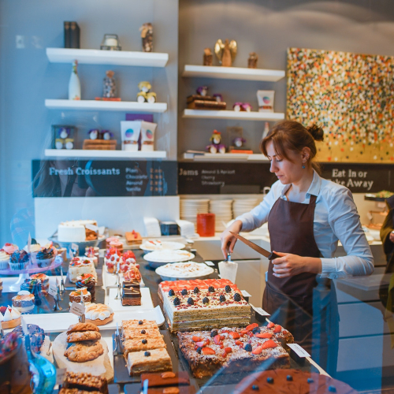

Our History
In the heart of a bustling city, amidst the towering skyscrapers and the ceaseless hum of traffic, stood a quaint little bakery called "Cake & Cake." Its unassuming exterior belied the culinary wonders that lay within, for this was no ordinary bakery. Here, cakes were not merely confections; they were expressions of artistry, each one a masterpiece crafted with love and passion.
The bakery's founder, a woman named Eleanor, had always possessed a deep-seated love for baking. From a young age, she would spend countless hours in her grandmother's kitchen, mesmerized by the transformation of simple ingredients into delectable creations. As she grew older, her passion for baking only intensified, and she dreamed of one day opening her own bakery, a place where she could share her love for cakes with the world.
Eleanor's dream eventually came true when she opened Cake & Cake in 1985. From the moment she opened her doors, she was met with an overwhelming response from the community. People were drawn to the bakery's cozy atmosphere, the tantalizing aroma of freshly baked cakes, and, most importantly, the irresistible taste of Eleanor's creations.
Over the years, Cake & Cake became a beloved institution, a place where people gathered to celebrate life's special moments with a slice of Eleanor's magic. Birthday cakes, wedding cakes, anniversary cakes – Eleanor's cakes were the centerpiece of countless celebrations, each one perfectly capturing the essence of the occasion.
As Eleanor's fame grew, she remained humble and true to her roots. She continued to bake each cake with the same love and care that she had always poured into her creations. And so, Cake & Cake thrived, a testament to Eleanor's passion and the power of a simple cake to bring people together.